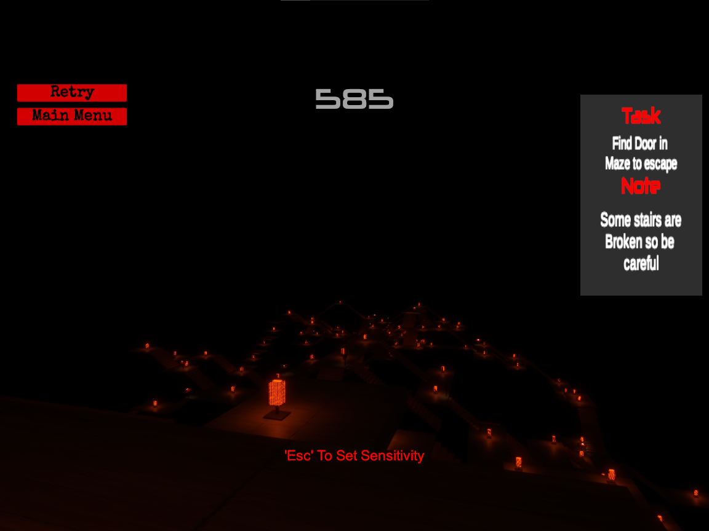
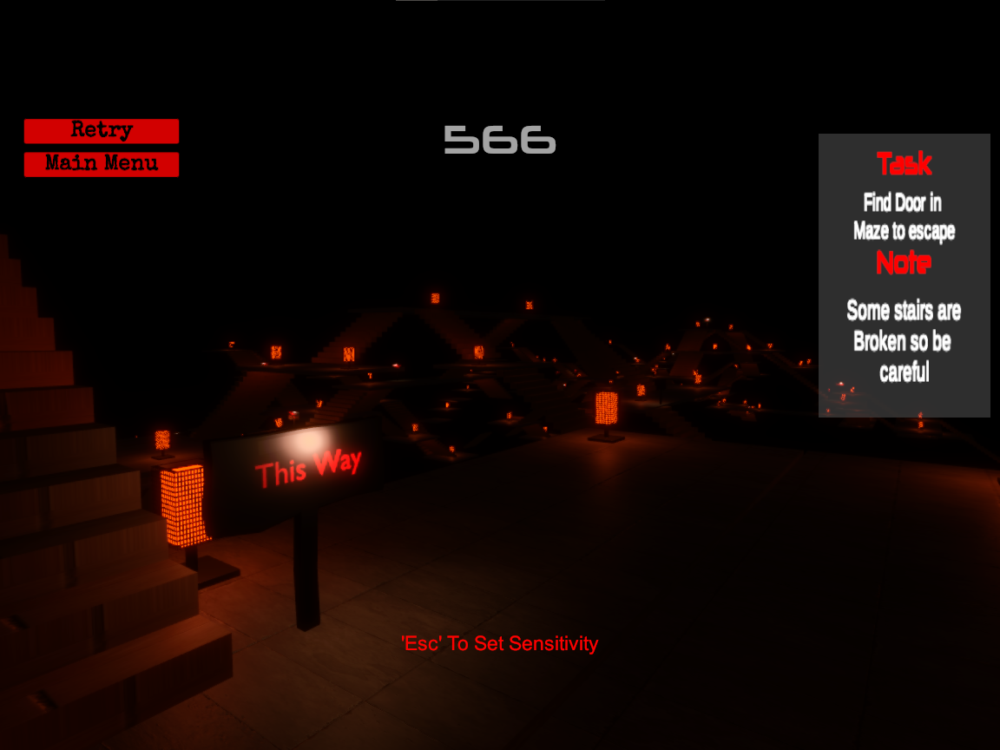
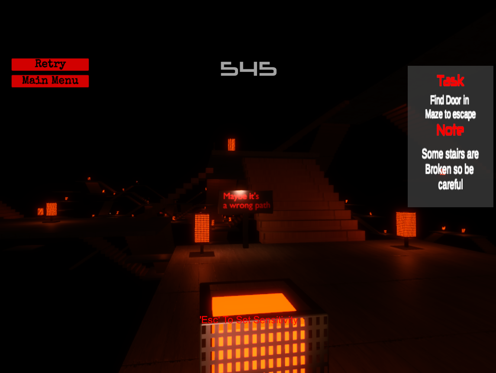

Find Escape
Gameplay Media
Screenshots and gameplay footage from the released game.



Project Overview
Find Escape is my second released game, published in 2024. It is a dark maze game where the player has to find the exit door before the time runs out.
The game is released on a different itch.io account from my 01 Theory page, which is why it is linked separately below.
Gameplay Concept
The game is built around three ideas that work against the player at the same time:
- A dark maze: the environment is dark, so finding the way forward takes attention, not just speed.
- Broken stairs: some of the stairs in the maze are broken, so not every path can be used and routes have to be chosen carefully.
- A running timer: the player must reach the door before time runs out, which turns every wrong turn into a real cost.
My Role & Responsibilities
As the solo developer, I handled the project from idea to release: designing the maze and its rules, implementing the gameplay, testing the builds, and publishing the finished game.
What I Learned
Find Escape was an early step in my game development journey. Finishing and releasing a complete game, with a clear goal, a time limit and a defined end, taught me to keep the scope small enough to ship. That habit of completing playable experiences over endless ideation is still how I work on Hover Flux and Cores & Scrap.